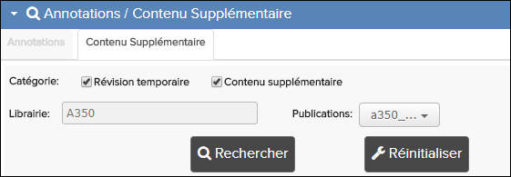
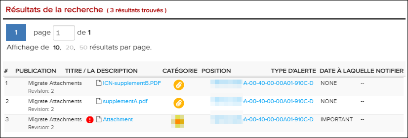

La boîte de dialogue de recherche des attachements permet de
rechercher plusieurs catégories différentes de pièces jointes, telles que les
suppléments et révisions temporaires. Vous pouvez réinitialiser ce formulaire en
cliquant  sur le bouton
Réinitialiser.
sur le bouton
Réinitialiser.
Remarque : Vous pouvez également rechercher le
contenu textuel des attachements à l'aide de la recherche en texte intégral.
Faire référence à Recherche en texte intégral.
Si votre administrateur a activé le privilège Accès uniquement aux révisions en
cours, les publications qui ne sont pas à jour n'apparaissent pas dans les
résultats de recherche. Vous devez mettre à jour la dernière révision avant que ces
publications ne soient disponibles. Reportez-vous au volet La fenêtre de Librairie pour plus
d'informations.
Remarque : Lorsque vous effectuez une recherche de pièces jointes sur
une publication de lien symbolique, les informations affichées concernent la
publication d'origine (cible).
Pour rechercher des attachements, procédez comme suit:
-
Cliquez sur
 l'en-tête sous le volet Table des
matières.
Le volet de recherche de la boîte de dialogue de recherche Annotations / Contenus supplémentaires se développe.
l'en-tête sous le volet Table des
matières.
Le volet de recherche de la boîte de dialogue de recherche Annotations / Contenus supplémentaires se développe. -
Cliquez sur l'onglet attachements.
La boîte de dialogue de recherche des attachements apparaît.

Boîte de dialogue de recherche de pièces jointes
Remarque : S'il y a des attachements, une icône supplémentaire peut apparaître à droite des
annotations / Titre de l'en-tête du contenu supplémentaire. Reportez-vous à
Afficher Attachement.
supplémentaire peut apparaître à droite des
annotations / Titre de l'en-tête du contenu supplémentaire. Reportez-vous à
Afficher Attachement. -
Facultatif: avec les champs Notification à partir de la
date et Notification à la date,
sélectionnez une plage inclusive de dates de notification. Pour chaque champ de
date, cliquez sur
 l'icône de sélection de la date pour
sélectionner une date dans un widget de calendrier.
Les résultats de la recherche n'incluront que les attachements dont la date de notification est égale ou se produit après la date de notification, ainsi que égale ou se produit avant la date de notification. Pour afficher uniquement les attachements avec une date spécifique, sélectionnez la même date pour les deux champs.Remarque : Si vous laissez le champ de notification à partir de la date vide, il n'y a aucune restriction sur la limite inférieure de la plage de dates. De même, si vous laissez le champ de notification à ce jour vide, Il n'y a aucune restriction sur la limite supérieure de la plage de dates.
l'icône de sélection de la date pour
sélectionner une date dans un widget de calendrier.
Les résultats de la recherche n'incluront que les attachements dont la date de notification est égale ou se produit après la date de notification, ainsi que égale ou se produit avant la date de notification. Pour afficher uniquement les attachements avec une date spécifique, sélectionnez la même date pour les deux champs.Remarque : Si vous laissez le champ de notification à partir de la date vide, il n'y a aucune restriction sur la limite inférieure de la plage de dates. De même, si vous laissez le champ de notification à ce jour vide, Il n'y a aucune restriction sur la limite supérieure de la plage de dates. -
Cliquez sur
 le bouton
Rechercher.
Le volet Résultats de la recherche apparaît sous le formulaire de recherche des attachements.
le bouton
Rechercher.
Le volet Résultats de la recherche apparaît sous le formulaire de recherche des attachements.
Résultats de la recherche de pièces jointes
La publication et le document correspondants sont également sélectionnés et affichés
dans la bibliothèque et la table des matières
volets respectivement.
Si toutes les autorisations sont activées pour le supplément
Peut télécharger, vous pouvez voir  "La attachement est en conflit" Icônes. Une attachement
avec cette icône a été créée dans une révision précédente et il est possible qu'elle
contredit la mise à jour informations dans la dernière révision. Voir Migrer les Attachements.
"La attachement est en conflit" Icônes. Une attachement
avec cette icône a été créée dans une révision précédente et il est possible qu'elle
contredit la mise à jour informations dans la dernière révision. Voir Migrer les Attachements.
Vous pouvez utiliser le volet attachements pour gérer les pièces jointes. Reportez-vous à Volet des Attachements.